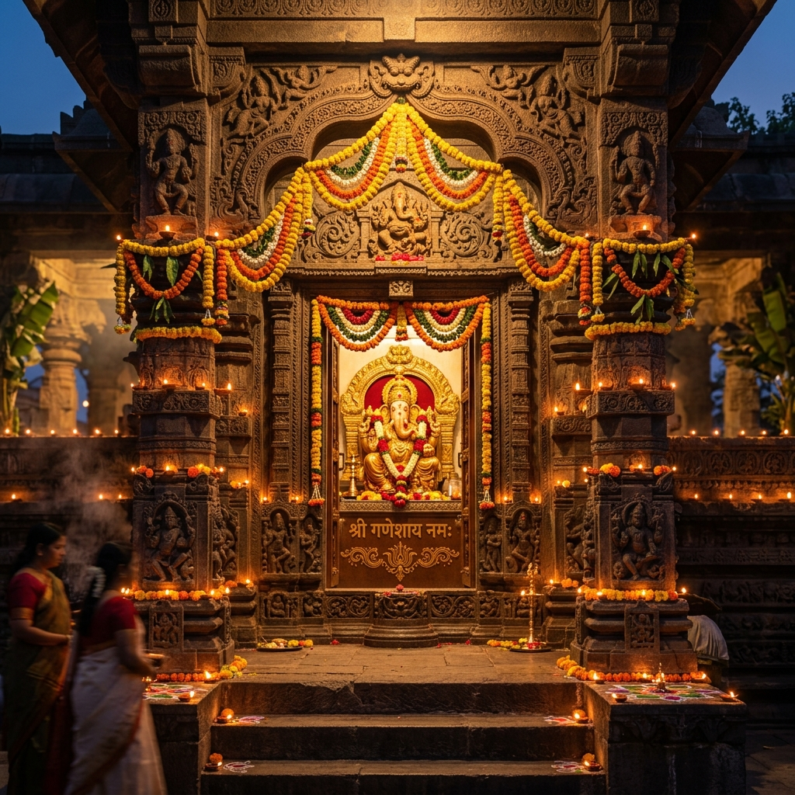
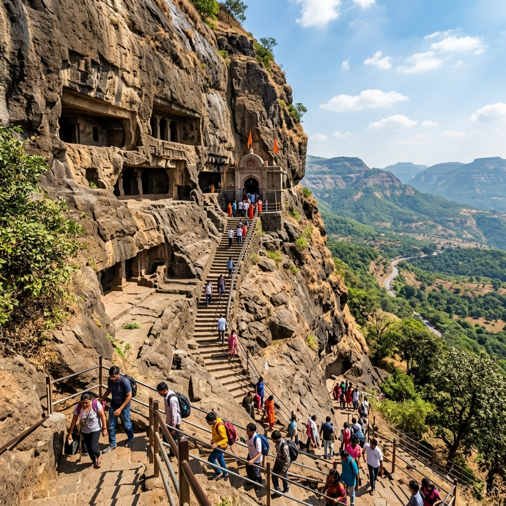

About Temple
Visiting Dagdusheth Halwai Ganpati Temple is a vibrant and uplifting experience that reflects the deep devotion people have for Lord Ganesha in Pune. Unlike quiet temples, this one feels alive with energy, especially during aarti when chants and music fill the air. The idol itself is beautifully decorated with gold ornaments and flowers, and just standing in front of it gives a strong sense of positivity and faith. It's a place where people come with wishes and leave with a feeling of hope.
Vibrant & Alive
Chants & Aarti
Pure Positivity
Deep Devotion

History & Significance

The temple was established in the late 1800s by a sweet maker named Dagdusheth Halwai, in memory of his son who passed away during a plague epidemic. With guidance from Lokmanya Tilak, the Ganpati festival here became a public celebration, which later played a key role in India's freedom movement by bringing people together. Over time, the temple became one of the most famous and respected Ganpati temples in Maharashtra.
Late 1800s
Dagdusheth Halwai
Lokmanya Tilak
Freedom Movement Connection
What Makes It Unique
Discover the unique factors that set Dagdusheth Ganpati Temple apart from other shrines.


Travel Guide
Convenient ways to reach the temple located in the heart of Pune.
Option 1: Rail Connections
Pune Junction is the nearest railway station (about 3 km away). Auto-rickshaws, cabs, and local PMT buses can bring you to Budhwar Peth in 10-15 minutes.
Pune Junction: ~10-15 minsOption 2: Local City Buses
Frequent local buses connect to Budhwar Peth and Appa Balwant Chowk from all parts of Pune (Swargate, Kothrud, Hadapsar, Shivaji Nagar).
Buses: Very frequentOption 3: Driving & Traffic Warning
Budhwar Peth is one of Pune's busiest and oldest commercial hubs. Parking is extremely limited, so taking public transit is highly recommended.
Essential Information
Important details regarding timings, fees, and the festival season.
Timings & Aarti
Opens daily at 6:00 AM and remains open until 11:00 PM. The evening aarti is a highly lively event that attracts thousands of devotees.
Entry & Charges
Entry is entirely free for all devotees. There are no fees for general darshan, and voluntary donations or special pooja bookings are optional.
Best Time to Visit
Early morning or late night is best for a quiet visit. During Ganesh Chaturthi, the temple is incredibly decorated and active, though crowds are massive.
Location & Coordinates
Budhwar Peth, Shivaji Road, Pune, Maharashtra 411002